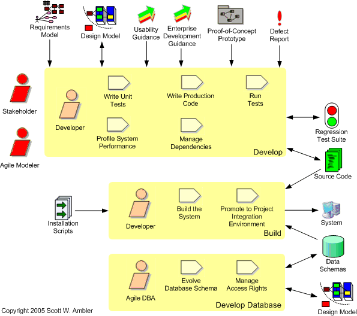

The Implementation Discipline
| Home | Phases | Disciplines | Milestones | Roles | Deliverables | Guidance | Help |
|
|
The Implementation Discipline |
|
||||||||
|
||||||||||
The goal of this discipline is to transform your model(s) into executable code and to perform a basic level of testing, in particular unit testing.

| Phase | Activities |
| Inception | Technical prototyping. You might need to "spike" a small aspect of a requirement in order to understand
it sufficiently, enabling you to estimate the effort required.
These prototypes are typically small, "throw away" pieces of code. User interface prototyping. For most stakeholders the user interface (UI) -- the screens, reports, and manuals -- is the system. When the UI is potentially complex, or when your stakeholders want to see what they're going to get before they buy it, you will want to consider prototyping at least the main screens/pages. The UI prototype, usually a throw away at this point, would be used to convince your stakeholders that you understand their needs (which you would explore as part of your modeling efforts). |
| Elaboration | Prove the architecture. The critical activity within the Elaboration phase is to identify a potential architecture and then prove that your architecture works via the development of an end-to-end architectural prototype for your system, thereby mitigating much of the technical risk on your project. Technical prototypes such as this are production quality code that forms the foundation, or skeleton, of your system. |
| Construction | Test first. Take a
TDD-based
approach to all aspects of implementation. Build continuously. Daily builds are a good start, but ideally you want to build your system whenever the source code changes. Automate this using a product like Cruise Control which monitors your version control system for changes to your code and rebuilds as needed. Evolve the domain logic. Implement your business logic in your domain/business classes. Evolve the user interface. The user interface is the system to most of your users. Strive to make your software as usable as possible by following common usability and user interface design strategies. Evolve the data schema. Your data schema should be evolved in step with your domain and user interface code. You will need to refactor your database just like you refactor your other types of code. Develop interfaces to legacy assets. You will often need to access existing functionality within legacy systems. This may be done via a variety of means, including a web services interface, a C-API, stored procedures, and so on. Legacy analysis is often an important part of your modeling efforts. Write data conversion scripts. You will often need to access legacy data sources. These data sources often suffer from design and/or quality problems and as a result you will need to write data conversion scripts to put the data feed(s) into a useable format. |
| Transition | Fix defects. Your focus shifts to fixing the defects found as a result of testing. |
 |
Page last updated: May 13, 2006 This page is tailored with permission from Ambysoft Inc.'s Agile UP Product Original page is Copyright © 2005-2006 Ambysoft Inc. |